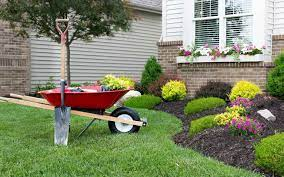
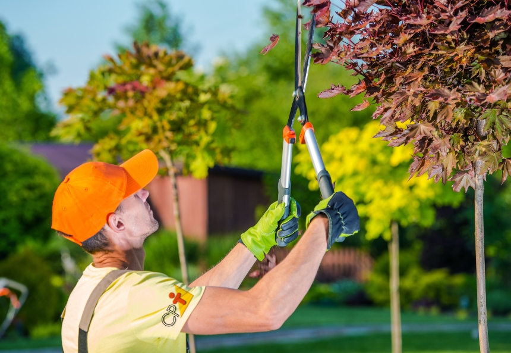

PAISAGISMO: O paisagismo é uma técnica que tem o intuito de projetar, planejar, fazer a gestão e a preservação de espaços livres.
PODAS:O serviço de poda de árvores, além ser obrigatório em algumas cidades, mantém a harmonia dos ambientes.
MANUTENÇÃO DE GRAMA:serviço de preservação e cuidado com o aspecto visual do seu jardim, além de manter a grama sempre fortalecida.